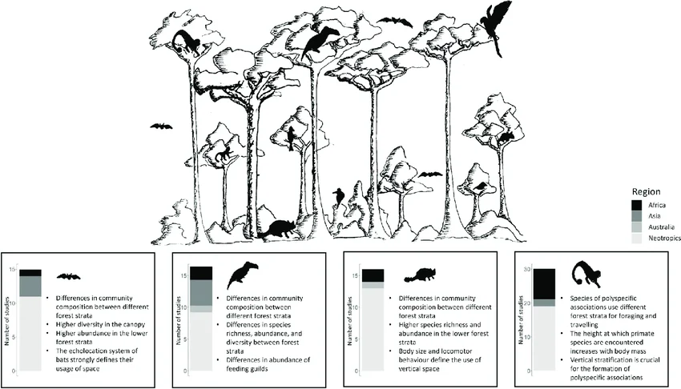

Semana 5: Comunidades no Espaço - Montagem de Comunidades e Padrões de Diversidade
Slides desta aula
1 Introdução: O espaço como determinante da estrutura
Sejam bem-vindos à nossa quinta semana de Ecologia de Comunidades. Até agora, discutimos como os indivíduos interagem e como as populações crescem. No entanto, as assembleias biológicas não existem no vácuo; elas estão inseridas em matrizes espaciais complexas. Hoje, entenderemos por que certas espécies ocorrem em um fragmento de Mata Atlântica em Pernambuco e não na Caatinga, e como a escala de análise altera nossa percepção sobre a biodiversidade.
A ecologia de comunidades busca compreender a distribuição e abundância de agrupamentos de espécies, influenciados tanto por fatores abióticos (filtros ambientais) quanto por interações bióticas. Veremos que a montagem de comunidades é um processo dinâmico de colonização e extinção condicionado pela área, distância e heterogeneidade do habitat.
2 Heterogeneidade espacial e padrões globais de diversidade
2.1 A hipótese da heterogeneidade do habitat
Um dos princípios fundamentais da ecologia espacial é que ambientes mais heterogêneos acomodam mais espécies. Isso ocorre porque a complexidade arquitetônica (como a estratificação vertical de uma floresta) oferece uma gama maior de micro-habitats e recursos, permitindo que espécies com diferentes nichos coexistam.

Firura: Dado um espaço limitado, a heterogeneidade de hábitats tem um efeito negativo sobre a área de cada hábitat. fonte
Em fragmentos bem conservados da Mata Atlântica pernambucana, a presença de estratos arbóreos distintos (sub-bosque, dossel e árvores emergentes) cria gradientes de luz e umidade. Isso permite que diferentes guildas de aves e insetos ocupem o mesmo espaço horizontal, mas em “espaços de nicho” verticais distintos.

2.2 O Gradiente latitudinal de diversidade (GLD)

O aumento da riqueza de espécies dos polos em direção ao equador é um dos padrões mais consistentes da biosfera. Para explicar esse fenômeno, os ecólogos propõem cinco hipóteses principais:
- Energia e Produtividade: Regiões tropicais recebem maior radiação solar e possuem temperaturas mais elevadas, o que aumenta a produtividade primária líquida. Isso permite populações maiores e reduz as taxas de extinção.
- Estabilidade Climática: O clima tropical é menos sazonal e mais previsível em escalas temporais longas (como períodos interglaciais), permitindo uma especialização de nicho mais acentuada.
- Tempo e Idade: Os trópicos são considerados comunidades mais “antigas” que não sofreram o impacto direto das grandes glaciações recentes, permitindo mais tempo para o processo de especiação.
- Área: A zona tropical ocupa uma área contígua maior no globo terrestre. Áreas maiores suportam mais indivíduos e, consequentemente, têm menores taxas de extinção e maiores taxas de especiação alopátrica.
- Interações Bióticas (Predação/Mutualismo): A predação é mais intensa nos trópicos, o que mantém as populações de presas abaixo da capacidade de carga, reduzindo a exclusão competitiva e permitindo maior coexistência (coexistência mediada pelo consumidor).
2.3 A relação espécie-área
A relação entre o número de espécies (\(S\)) e a área amostrada (\(A\)) é descrita matematicamente pela equação de Arrhenius:
\[S = c \cdot A^z\]
Onde: * \(S\) é a riqueza de espécies. * \(A\) é a área. * \(c\) é uma constante de intercepto que depende do grupo taxonômico e da região. * \(z\) é a inclinação da curva em escala log-log, indicando a taxa de acúmulo de espécies.
Ao aplicarmos o logaritmo em ambos os lados, obtemos uma função linear:
\[\log(S) = \log(c) + z \cdot \log(A)\]
Em sistemas de ilhas oceânicas (como o arquipélago de Fernando de Noronha), os valores de \(z\) tendem a ser maiores (entre 0,20 e 0,35), indicando um isolamento maior e taxas de colonização menores. Em áreas continentais contíguas, o \(z\) é tipicamente menor (0,12 a 0,17), pois o fluxo de indivíduos mascara as extinções locais.
GO-2011.2-QUEST%2061.JPG)
3 O Framework de Whittaker: Alfa, Beta e Gama
Em 1960, Robert Whittaker propôs que a diversidade regional é o produto da diversidade local e da diferenciação entre os locais.
3.1 Definições Conceituais
- Diversidade Alfa (\(\alpha\)): É a diversidade local, medida dentro de uma comunidade ou habitat específico (ex: o número de espécies de peixes em um único recife de corais em Tamandaré).
- Diversidade Gama (\(\gamma\)): É a diversidade total de uma paisagem ou região geográfica. Representa o “pool” total de espécies disponíveis (ex: todas as espécies de peixes registradas no litoral de Pernambuco).
- Diversidade Beta (\(\beta\)): É a variação na composição de espécies entre as comunidades da região. Reflete o turnover (substituição) de espécies ao longo de gradientes ambientais.
3.2 A Relação Multiplicativa e Aditiva
Whittaker originalmente propôs uma relação multiplicativa: \[\gamma = \alpha \times \beta \implies \beta = \frac{\gamma}{\alpha}\]
Mais recentemente, o particionamento aditivo tem sido utilizado para escalas hierárquicas: \[\gamma = \bar{\alpha} + \beta\] Neste caso, \(\beta\) representa o número médio de espécies não compartilhadas entre os habitats.
3.3 Números de Hill (1973): Rumo à Diversidade Efetiva
Os índices clássicos de diversidade (Shannon, Simpson) possuem propriedades matemáticas distintas que dificultam a comparação direta. Hill (1973) unificou essas medidas em uma única equação paramétrica, convertendo os índices em números efetivos de espécies (o número de espécies igualmente abundantes necessário para produzir o valor observado do índice).
3.4 A Equação Unificada \(^qD\)
\[^qD = \left( \sum_{i=1}^{S} p_i^q \right)^{1/(1-q)}\]
Onde \(p_i\) é a abundância relativa da espécie \(i\) e \(q\) é a ordem da diversidade.
3.4.1 Ordens de \(q\) e seu significado
- \(q = 0\) (Riqueza de Espécies): Insensível às abundâncias relativas. Pesa igualmente espécies raras e abundantes.
- \(q = 1\) (Exponencial de Shannon): Pesa as espécies proporcionalmente às suas abundâncias. O limite quando \(q \to 1\) é \(\exp(H')\).
- \(q = 2\) (Inverso de Simpson): Dá maior peso às espécies dominantes. É calculado como \(1 / \sum p_i^2\).
3.5 O Princípio do Dobramento
A grande vantagem dos Números de Hill é que eles obedecem ao princípio do dobramento: se tivermos duas comunidades completamente distintas (sem espécies em comum) com diversidade \(X\), a diversidade gama da união delas será exatamente \(2X\). Os índices brutos de Shannon e Simpson não possuem essa linearidade, o que gera erros de interpretação em análises espaciais.
4 Beta-Diversidade em Detalhes
A diversidade beta é a chave para entender como a biodiversidade responde à fragmentação.
4.1 Turnover vs. Aninhamento (Nestedness)
A variação composicional pode ocorrer por dois processos distintos: 1. Turnover (Substituição): Espécies são substituídas por outras ao longo de um gradiente, geralmente devido a filtros ambientais ou barreiras. 2. Aninhamento (Nestedness): Sítios com menor riqueza são subconjuntos bióticos de sítios mais ricos. Isso ocorre frequentemente em processos de extinção ordenada por fragmentação, onde apenas espécies generalistas persistem em manchas menores.
4.2 Coeficientes de Similaridade
Para quantificar a similaridade (\(1 - \beta\)), usamos frequentemente termos baseados em tabelas de contingência binária (\(a, b, c\)): * \(a\): número de espécies presentes em ambos os sítios. * \(b\): espécies exclusivas do sítio 1. * \(c\): espécies exclusivas do sítio 2.
4.3 Jaccard (\(S_j\)) e Sørensen (\(S_s\))
\[S_j = \frac{a}{a + b + c}\] \[S_s = \frac{2a}{2a + b + c}\]
O índice de Sørensen dá peso dobrado às co-ocorrências (\(a\)), sendo mais sensível à presença comum do que o Jaccard.
4.4 Decaimento de Similaridade com a Distância
Em ecologia espacial, espera-se que a similaridade composicional diminua à medida que a distância geográfica entre os pontos aumenta (Distance Decay). Isso se deve a: 1. Limitação de Dispersão: Espécies demoram a chegar em locais distantes. 2. Autocorrelação Ambiental: Locais próximos tendem a ser ambientalmente mais parecidos do que locais distantes.
4.5 Aplicações Práticas: Conservação e Restauração
5 O Debate SLOSS (Single Large or Several Small)

A teoria de biogeografia de ilhas de MacArthur e Wilson gerou o debate SLOSS: * Single Large (Um Único Grande): Reservas maiores tendem a ter menores taxas de extinção e suportar predadores de topo (espécies-chave). * Several Small (Vários Pequenos): Se os pequenos fragmentos possuírem alta beta-diversidade (baixa similaridade entre eles), o conjunto de pequenas reservas pode proteger mais espécies totais (\(\gamma\)) do que uma única reserva grande.
Em Pernambuco, a fragmentação extrema da Mata Atlântica torna o debate crucial: devemos expandir fragmentos existentes ou criar corredores ecológicos para conectar manchas isoladas?.
6 Homogeneização Biótica
A introdução de espécies invasoras e a degradação ambiental podem levar à perda de diversidade beta, um processo chamado homogeneização biótica. Quando as mesmas espécies generalistas (ex: o pardal ou certas gramíneas exóticas) passam a dominar todas as comunidades, a similaridade entre elas aumenta, e a diversidade gama da região diminui, mesmo que a riqueza alfa local permaneça constante.
7 Avaliação de Restauração Ecológica
A similaridade composicional (Jaccard ou Sørensen) é um indicador robusto do sucesso de projetos de restauração. Comparamos a comunidade em restauração com uma “área de referência” bem preservada. À medida que a sucessão ecológica avança (de pioneiras para climácicas), espera-se que a similaridade com a referência aumente significativamente.
8 Conclusão
A organização das comunidades no espaço é o resultado de um balanço entre a colonização de clareiras e a exclusão competitiva, modulado pela geometria da paisagem. Compreender que a diversidade é uma propriedade de múltiplos níveis (\(\alpha, \beta, \gamma\)) e que deve ser medida por números efetivos (Hill) é essencial para qualquer ecólogo que deseje manejar os biomas neotropicais sob crescente pressão antrópica.
- PERONI, N.; HERNÁNDEZ, M. I. M. Ecologia de Populações e Comunidades. Florianópolis: CCB/EAD/UFSC, 2011.
- BEGON, M.; TOWNSEND, C. R.; HARPER, J. L. Ecology: From Individuals to Ecosystems. 4. ed. Oxford: Blackwell, 2006.
- Diversidade Alfa, Beta e Gamma na Ecologia. Resumo técnico baseado em Whittaker (1960) e Hill (1973).